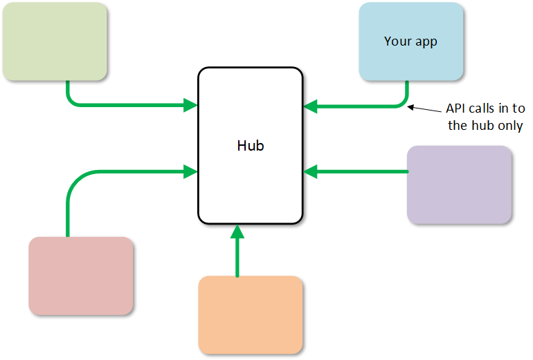
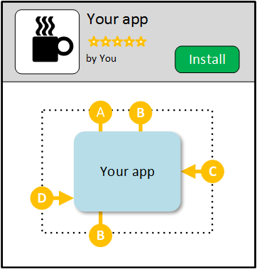

SIDEBARGOESHERE
The API platforms provided by most Integrated Talent Management (ITM) suites today for integrating HR applications use the traditional hub and spoke model. Hub and spoke is a natural evolution for large applications that have added APIs to a long established product.
Your app acts as a spoke, one of many clustered around a single large HR platform/ ITM suite that acts as the hub.
In the hub and spoke model, the APIs themselves are the intellectual property of the hub. The hub is in charge. It defines the APIs that your app can use. The APIs are only designed for your app to communicate to the hub - not to any other app. API calls are typically inwards, where your app calls APIs on the hub, rather than the other way around (although some platforms provide limited webhooks allowing the hub to push events to your app).
Hub and spoke API platforms are common and familiar, but they enforce lock-in and present a number of challenges to you, the app developer, and to customers.
Talent App Store is not hub and spoke based, but uses an open peer to peer model. In a peer to peer system, all apps are equal, and any app can consume any API on any other app. There is no single, large hub.
In a microservices architecture there is no single shared database, and peer to peer communications become essential for data and event synchronization.
For developers, the peer to peer model promotes agile API development and lets your build your SaaS app once and have any customer click to instantly install it.
For customers, the peer to peer model promotes choice via true plug and play of apps, and the overarching security model provides a single throat to choke in the event of a security breach.
Because any app can call APIs on any other app in the peer to peer model, no single party can be the gate keeper of the APIs (like the hub in the hub and spoke model).
Instead, APIs are defined by developers (typically via the screens at the developer site. This information is stored in the API catalog within the TAS core.
Because APIs can be contributed by anyone, the peer to peer API platform is more like open source software than traditional HR technology. If a developer feels that a certain API is not evolving quickly enough, or in a direction they want, they can copy (fork) the API and use it as a starting point for their own new API. If that new API gains traction, the owners of the original API and the new API can decide to merge back to a single API.
When a developer adds an API to the www.talentappstore.com marketplace (as opposed to a private marketplace - described later), they must do so under an open source license, so that there are no legal impediments to any other developer using that API.
The primary goal of TAS is that customers can click to install pre-integrated HR microservices - small, best of breed apps that communicate with each other via APIs - into their own ecosystem.
For click to install to work, TAS needs detailed information not just about the APIs themselves, but also about which specific APIs each app consumes and produces, so that it can join the dots at install time.
This information is entered by you (i.e. the app developer), also at the developer site. Your app can produce and consume any APIs, including those defined by other developers.
The core stores the information about which APIs your app consumes and produces in the app's API matrix.
Once you've defined the API matrix for your app, it's ready for install as far as TAS is concerned. Your app is now packaged so that any tenant can use it.
Your app starts out with private visibility (it's not publicly visible within the marketplace), meaning that for a tenant to install it, you'll need to send them a private install link. Later, you can request the marketplace owner publishes your app. When/if they do, then any tenant within the marketplace can find your app and click to install it without any input from you.
At some point, a tenant will install your app. When the install button is clicked, TAS joins the dots and effectively wires your app into the tenant's ecosystem in two steps:
First, the core updates the tenant's route map.
The route map holds details of all of the paths between the tenant's installed apps. For example, when the career site app installed at acme consumes the GET /jobs API to fetch the list of open jobs, the routes table knows that its the coolATS app that produces that API (based on that tenant's install choices).
A menu item in the storefront app lets you see the current route map for the tenant.
Next, The core sends a provisioning message to your app's server to tell it it has a new tenant. Your server may insert a row into its customers table, create a record in a CRM, or anything you like.
Your app is now fully installed (for this tenant) and can start consuming and producing APIs.
The peer to peer model provides customers with something not seen in traditional HR software stacks - true plug and play of apps.
When evaluating new apps, customers can click install to spin up a demo of a new app that runs against their own organization, job and candidate data in a few seconds. They can perform real, hands-on evaluation of several different apps in a day, and make informed "try before you buy" decisions instead of picking through sales pitches and guesswork.
When running a production stack, plug and play gives customers protection from vendor lock-in. In the peer to peer model, a customer can swap out any app and replace it with a different app, as long as the replacement produces and consumes the same APIs. TAS lets customers minimize their exposure to lock-in and leverage their own home-grown and legacy HR software over the long term.
We've heard how TAS supports plug and play, and how your app can consume APIs without needing to know which app(s) are producing those APIS. But how does this actually play out in your app's code?
While there is a lot happening under the covers, TAS makes this *service discovery* as transparent as possible.
Here is an example of an actual API call in TAS using the popular command line tool curl:
# as the app "jobboard",
# and acting for tenant "acme",
# call the API GET /jobs/{job}
# as defined by the developer "aotal"
curl -H "tazzy-secret: gjKUy7Y7Ehy0KgE32" \
http://jobboard.tazzy.io/t/acme/devs/aotal/jobs/1001
Here the API call is targeted not at any particular app, but at **tazzy.io**. Your app doesn't need to know which app is at the other end of the API call - it just works.
What makes this possible is tazzy, a transparent network proxy. Tazzy conceals the complexity of service discovery from your app.
Because tazzy works at the network level, your app doesn't need special SDKs or libraries to use TAS, and you can use any http-level tools such as curl, telnet, postman, etc. to develop and test your app.
Another advantage or working at the network level is increased performance when horizontally scaling (adding more servers to cope with increased traffic to your app). Tazzy caches routes and OAuth tokens and makes them available to all of the servers that make up your app, no matter how widely you scale. This is not possible with SDKs or libraries alone.
So how does this work? Tazzy does a lot under the covers when your app makes the API call above:
In other words, tazzy transparently sets up the security credentials for the API call and then redirects it to the correct app, all transparently to your app.
A note on security: even though the network traffic in to tazzy is protected by SSL/TLS, its not ideal to pass your app's secret key across the wire. In a production environment, you may decide to host tazzy yourself rather than use the shared community proxy. Then traffic between your app and tazzy can flow over your own internal network. This will likely also improve your app's performance due to reduced latency.
When customers compose their HR technology stack from microservices from a number of vendors, security requirements are an even greater consideration than usual.
A major benefit of the peer to peer model API platform is that it gives customers a "single throat to choke" in the event of a breach of any app in the customer's ecosystem.
With all communications between apps happening through APIs, and all API authorization handled via the platform, in response to the customers install choices, the customer now has the power to instantly and completely cut off any badly behaving app. An example of this is the tool provided by Talent App Store to flush API security tokens. This instantly invalidates all previously issued tokens and requires that apps reauthorize before starting up communication to each other again.
There are many cases for marketplaces built on TAS. Examples:
Marketplace operators can lock down their marketplaces at various levels, including at the individual API level.
For example, an ATS might lock down key APIs like GET /jobs, so that only their own ATs can produce that API. This lets the operator protect their own product areas while being completely open for complementary products.
At Aotal, we operate the www.talentappstore.com marketplace, which has all of its levers set to "fully open". Any developer can add any app to the marketplace, using any APIs. We place all of our own apps into the www.talentappstore.com marketplace, including the popular SnapHire ATS.